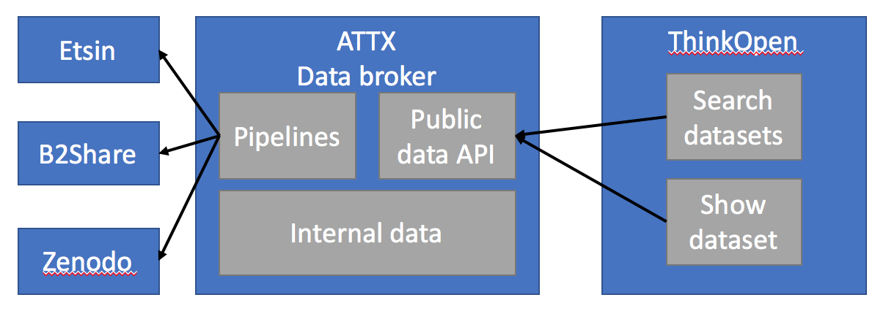

DRAFT - work in progress
Mildred use case
The goal of the use case is to create a dataset that provides an aggregated view to the research data output of the University of Helsinki. This new dataset and accompanied data API are then used as the backend service for university's Think Open site. Think open site brings together and to promotes openness related activities, such as open research data, open source code and publications, within the University of Helsinki.
Use case is part of the Mildred project, which aims to update the research data infstructure provided by the University of Helsinki. Mildred consists of five subprojects that concentrate on different phases of the research process. ATTX co-operates with the subproject which is responsible for building and data publishing and metadata services.
Approach
Dataset related metadata is still relatively sparse, compared to other research outputs, such as publications. In this use case we are concentrating solely on data sources that were chosen by the project Mildred's steering group.
One of the main ideas behind the use case, it the added value that ATTX broker deliver by running customizable validation and data quality processes over the harvested data. This additional data can also be published and used by the ThinkOpen site to deliver custom quality metrics alongside the dataset metadata.
Etsin is already a service that aggregates dataset metadata from different sources, so why make another similar dataset? Mildred use case is interested specifically in UH's research outputs whereas Etsin is a national service. By creating an UH specific dataset, we have control over both the content and structure of the dataset, which makes it easier to integrate it with ThinkOpen work or any other UH specific use. It is also possible that some day the data might flow in an opposite direction between UH's dataset and Etsin.
When it comes to identifying which datasets are somehow related to the University of Helsinki, we will start with the simple methods that should have good precision but might not have acceptable recall, in order to get some data. It is however possible to extend to those methods with more complex internal processing.
TODO: Link to OpenScienceFair poster draft.
User stories
Data sources
Etsin
Etsin is a national research dataset registry that contains both manually inputted and harvested metadata.
Api documentation: http://openscience.fi/etsin-api
B2Share
B2Share is part of the EUDAT collaborative data infrastructure.
In B2Share the data is organized around communities, which all maintain their own metadata schemas for community related records. This means that harvested data structures can vary depending on which community the record belongs to. There is also a common schema that is shared with all the communities.
API documentation https://b2share.eudat.eu/help/api
Zenodo
Zenodo is a general purpose repository for all kinds of research outputs ranging from presentations to datasets. Users can create communities to organize content into subrepositories.
Api documentation: http://developers.zenodo.org/
Example output from Hulib community in DataCite format: https://zenodo.org/oai2d?verb=ListRecords&metadataPrefix=oai_datacite&set=user-hulib
Finto
Finto or Finnish thesaurus and ontology service can be used to access up-to-date versions of maintained linked vocabularies, which can be used to describe datasets or linked to existing dataset describtion to provide linked data for complex queries and automatic inferencing of new data.
IOW
IOW is service for creating and maintaining descriptions for interoperability. In the context of of this use case, it means that IOW can be used as the data source for schemas that allow for automatic validation of incoming or outgoing broker data.
Implementation
Architectural overview:

Features:
- DataCite output format
- Custom output format if required
- Data validation based on JSON schemas
- simple data quality analysis
- Identifying dataset related to UH
- Deduplication of dataset metadata available from multiple sources